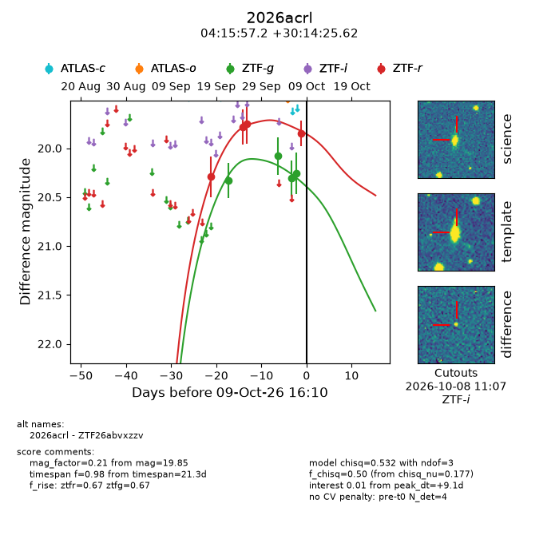
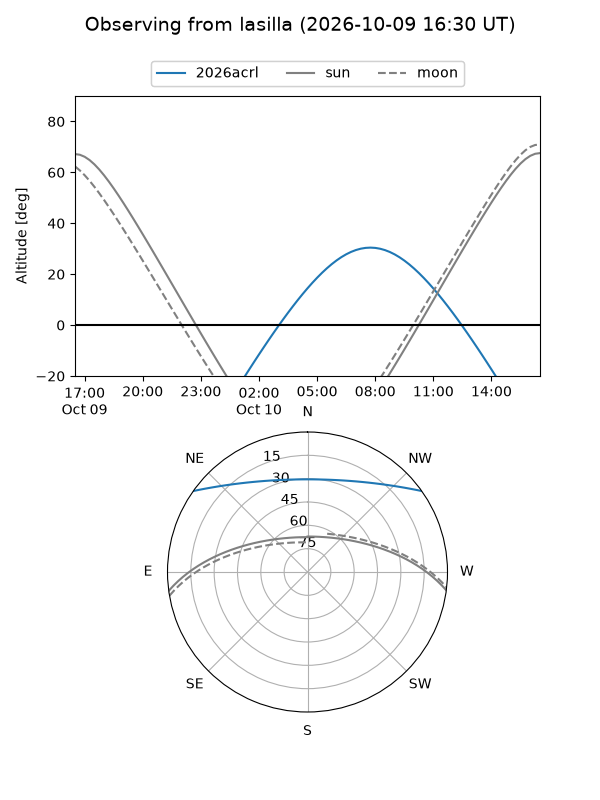
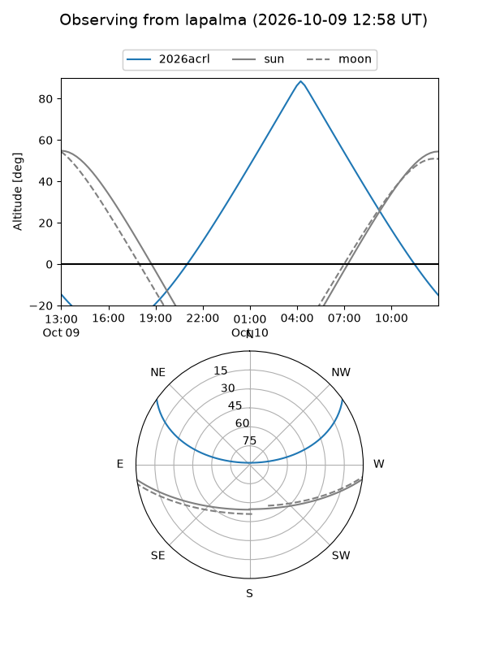
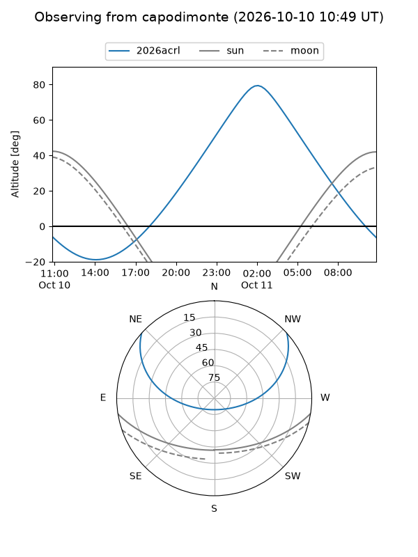
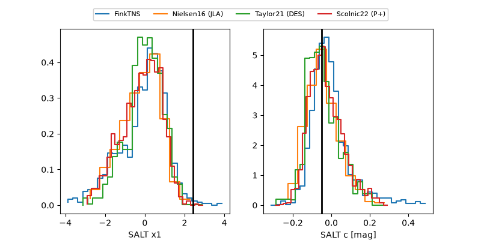

2026acrl
Target 2026acrl at 2026-10-09 16:11
Aliases and brokers:
FINK-ZTF: ztf.fink-portal.org/ZTF26abvxzzv
Lasair-ZTF: lasair-ztf.lsst.ac.uk/objects/ZTF26abvxzzv
ALeRCE-ZTF: alerce.online/object/ZTF26abvxzzv
YSE-PZ: ziggy.ucolick.org/yse/transient_detail/2026acrl
TNS name: wis-tns.org/object/2026acrl
Direct TNS query: direct search
alt names
ZTF26abvxzzv (ztf,fink_ztf)
2026acrl (tns,yse)
Coordinates:
equatorial (ra, dec) = 63.9884,+30.24045
equatorial (HMS+DMS) = 04:15:57.22,+30:14:25.62
galactic (l, b) = (166.9758,-14.64785)
Flags:
peak dt: +9.1
Photometry:
last ztfg=20.26, ztfr=19.85
4 ztfg, 4 ztfr detections
Lightcurve

Visibility



Additional plots
